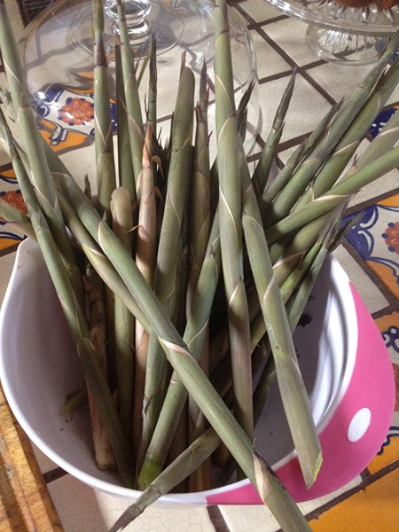
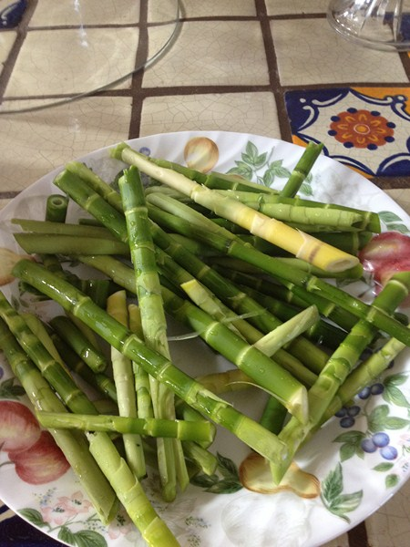
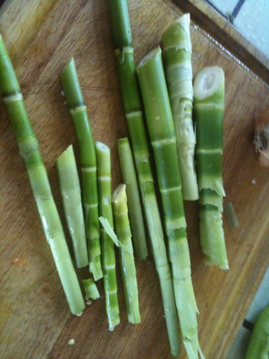
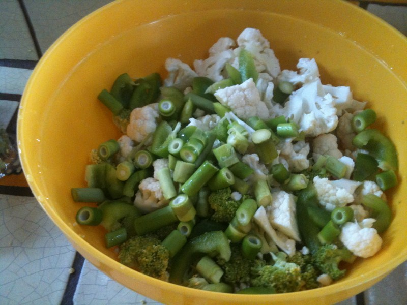
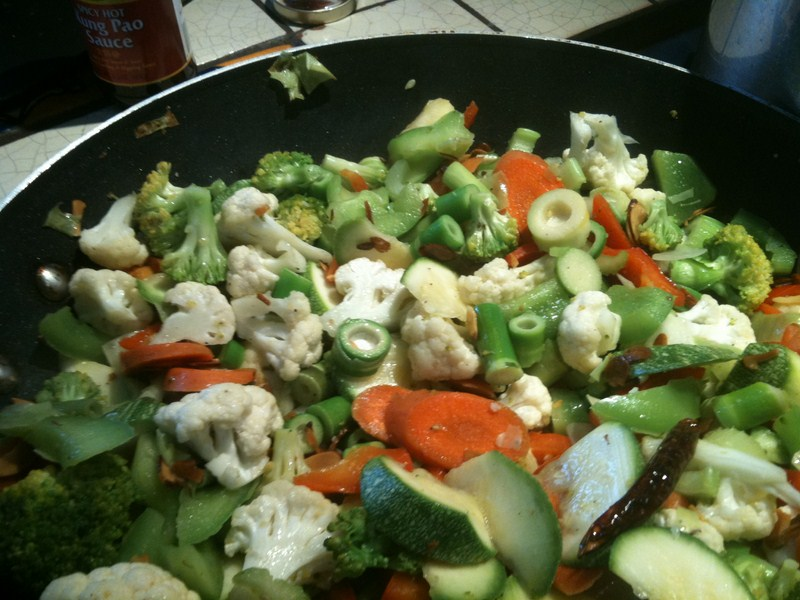

Various recipes can be found that incorporates bamboo as a healthy addition or the key ingredient to your dish.
Below we have outlined a vegetable stir fry dish we have cooked that utilizes bamboo shoots. You can eat all the varieties that we sell, but bissetti and rubro shoots are the best. They are both sweet. You can eat them raw.
Other varieties require a bit of boiling to remove the slight bitter taste.
It's a very special treat to harvest your very own bamboo shoots, nothing like fresh shoots. Iam sure you had them, if you have been to a chinese restaurant, but those shoots came from China in a can ; - (
How to prepare Bamboo
1. Rubro shoots about 6-8 inches
2. Harveted shoots ready to remove outer sheath.
3. Tips cut and outer sheaths removed
4. Ready for cutting up into bite size pieces!
5. Almost done.
6. In the frying pan with a bit of olive oil and salt and other veggies, ready to eat in just a few minutes. My wife adds a bit of soy souce as well and she sprikles some dry peanuts on top for some crunch. It's great